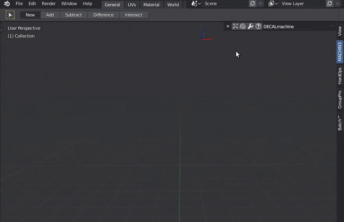
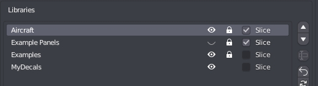

Contents
Installation
How is it done?
See the Installation guide and follow it precisely. Note the version requirement.
Get support
Attention
Note the Requirements in the installation guide.
Make sure you are using the latest version.
Confirm you've followed the installation instructions.
General information
To provide help, I need the following:
- Proof of Purchase
- system-info.txt and pil.log
Note
Please use the Request Support tool in the help panel to create the system-info.txt and pil.log files, and for further instructions. 
Errors
If you are seeing an error, please send me a screenshot of the error message.
Even better, send a screenshot of the terminal/system console via email, or copy and paste its text into the mail.
On windows you can turn on the console from Windows > 'Toggle System Console'.
On Linux and MacOS, just start Blender from a terminal.
Keep in mind
I do not need an image of Blender's Info View and I don't need to see Blender's Python Console either.
If the error only occurs on a certain model, please attach the blend file as well.
Please remove any part of the model that doesn't contrinbute to the problem to keep the file size small.
Tool misbehaviors
If you think a tool of DECALmachine doesn't do what it should do, please send me the blend file.
Please remove any part of the model that doesn't contribute to the problem to keep the file size small.
Contact
Use eMail, not twitter, not facebook, not youtube, not artstation, not blender market, and not the Blender Artists or polycount threads for reporting of errors.
Other Addons
Is MACHIN3tools required?
MASCHIN3tools is not needed, but I'd recommended to use at least some of its tools, as they are very convenient in the DECALmachine workflow. Check out the addons section.
Are HardOps and BoxCutter required?
HardOps and BoxCutter are not needed to use DECALmachine. HOps/BC and DM fill different niches in a hard surface workflow.
DM is a finishing and detailing tool. While HOps/BC are tools for working with form and generally improve the Blender experience greatly.
As such the addons complement each either very well and I'd recommend them to any DECALmachine user.
Furthermore it should be noted, that the HardOps and BoxCuter developers have been and continue to be extremely supportive and helpful and DECALmachine would not be what it is, without their initial contributions and guidance.
Why can't I access DECALmachine's pie menu when I activate BoxCutter's tool?
If you make Boxcutter active, by pressing its button in the tool bar, or via the Alt + W shortcut, BoxCutter takes over and brings up its own pie menu when pressing the D key.
That is - for now - expected behavior. You are seeing Blenders new tool system - or perhaps a disadvantage of it - in action.
To get the DECALmachine pie menu back when pressing D, you need to switch to any other tool but BoxCutter.
I'll be looking into allowing none-D keys - even when BoxCutter is active - to bring up DECALmachine's pie menu in an upcoming update. From a user perspective that's definitely something that should be possible.
The tool system in Blender is still new and perhaps unfinished. And so the BoxCutter devs and I are using pretty drastic methods to avoid overlaps at this point.
Over time the system will mature and best practices will evolve.
Technique
Can you bake the decal normal maps to a single normal map?
This is planed for the upcoming 1.9 or 2.0 release.
How do you export the decals to Unity/Unreal?
This is planed for the upcoming 1.9 or 2.0 release.
Why are my panel decal materials/textures taken from the Aircraft(or any other) library?
You have enabled the Slice option for this other, non-panel decal library in the addon preferences.

Changing the Slice property of a decal library, requires a library reload, or alternatively a Blender restart. Don't forget to save your preferences after the reload, or before the restart.
To change panel decal materials, check out the Adjust tool. Adjust will access all decal libraries marked as Slice. The Slice tool will access that same pool of materials.
Is there a way to make decals affect displacement instead of normals?
Technically it's trivial to change the decal node tree to do displacement as the height maps are already supplied. But think about it, a floating decal with actual displacement?
First off, the decal would need to be subdivided a lot, which can be done, but secondly what would happen to the displaced geometry? It would intersect with the base mesh the decals are floating above - you wouldn't see much of the displaced geometry, as it is sunk into the base mesh.
Using DECALmachine
How do I snap decals to a surface?
When Decals are imported using the asset loaders, all snap settings are prepared - face snapping, align to surface, etc. Snapping itself is not turned on however.
The suggested method to move decals and align them is by holding down CTRL while moving decals via g. This will turn on snapping temporarily for as long as CTRL is pressed.
Decal Creation
How do I create Decals?
You can ceate decals of all 4 types directly in Blender, see Decal Creation for details.